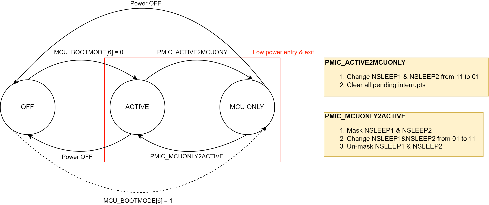

4.21.1. MCU Only mode¶
LPM library provides APIs to transistion the SoC and PMIC from ACTIVE to MCU only mode and vice-versa.
4.21.1.1. Definitions¶
ACTIVE mode: WKUP and MCU along with MAIN SoC side voltage domains are ON.
MCU Only mode: WKUP and MCU voltage domains are ON, and MAIN SoC side voltage domains are OFF.
4.21.1.2. Use care requirements & Overview¶
SoC: J721e
PDN: Dual Leo
- Userguide: https://www.ti.com/lit/ug/slvuc32/slvuc32.pdf
- Data Sheet: https://www.ti.com/lit/ds/symlink/tps6594-q1.pdf
4.21.1.2.1. Introduction¶
SoC’s such as J721E, integrates a Micro Controller Unit Subsystem (MCU SS) as a chip-in-chip. It can operate fully isolated from rest of the chip using a separate voltage supply, clock sources and resets and include the components needed for device management. This allows the MCU SS to function continuously regardless of the state of the rest of the device.SoC’s such as J721E, integrates a Micro Controller Unit Subsystem (MCU SS) as a chip-in-chip. It can operate fully isolated from rest of the chip using a separate voltage supply,clock sources and resets and include the components needed for device management. This allows the MCU SS to function continuously regardless of the state of the rest of the device.
Depending on the application needs, MCU only mode can be used for:
- Reset & recovery of main domain functionality in case of detected failure
- As a low power mode of operation where in functionality implemented in MCU mode continues to be operational while rest of chip is powered down. In this case Software running on MCU domain can detect and process wakeup events and in response can reload and restart applications running in Main domain
We will focus on low power mode implementation using MCU only mode in this document.
4.21.1.3. Scope of work¶
Scope would be to implement a Low Power Manager (LPM) running on MCU R5 core, with APIs to switch to and from MCU only mode to ACTIVE mode on J721E device with dual Leo (TPS6594-Q1) PDN. When we come back from MCU only to ACTIVE mode the MCU application bootstraps all cores.Bootstrapping happens using the SBL boot lib.
Following Table summarizes the scope of work:
| Is | Is Not |
|---|---|
| Boot in ACITVE mode and then switch to MCU only mode | Boot in MCU only mode and switch to ACTIVE mode (may be added later) |
| Switch from MCU only mode to ACTIVE mode and vice-versa | |
| Low power mode trigger - both entry and exit from LP modes are handled in response to timer events | CAN message trigger |
| Support for A72 running Linux and other cores running FreeRTOS | Support for QNX on A72 |
| Assumes strict isolation of access - MCU SW only access MCU domain resources and Main domain SW accesses Main domain resources | Cross domain access - MCU SW accessing Main domain resources or Main Domain SW accessing MCU domain resources |
| FreeRTOS based app showcasing use of LPM running on MCU1_0 | AutoSAR on MCU1_0 |
4.21.1.4. Low power Mode Transition¶
{kind=link}
{kind=link}
4.21.1.5. SW Architecture¶
Below is the intended SW distribution diagram
| Core | OS | Memory used | Peripheral/Functionality needed |
| MCU1_0 | FreeRTOS | MCU OCMC, DDR (Resource Table) | IPC |
| MCU2_0 | FreeRTOS | DDR | IPC, EthFw |
| MCU2_1 | FreeRTOS | DDR | IPC |
| MCU3_0 | FreeRTOS | DDR | IPC |
| MCU3_1 | FreeRTOS | DDR | IPC |
| A72 | Linux | MSMC, DDR | UART, CPSW9G Virtual driver, IPC |
{kind=link}
4.21.1.6. PMIC State diagram¶
Below is a simplified state diagram fop PMIC, for more detailed diagram refer Figure 3 in User guide (https://www.ti.com/lit/pdf/slvubr0).
{kind=link}
{kind=link}
4.21.1.8. Verification that SoC is in MCU only mode¶
There are two test points on the J721e EVM’s SoM board which can be used to validate the PMIC state.
- TP133 → H_MCU_PORz
- TP134 → H_SOC_PORz
| Mode | Test Point | Expected Voltage |
| ACTIVE | TP133 | 1.8 V |
| ACTIVE | TP134 | 1.8 V |
| MCU Only | TP133 | 1.8 V |
| MCU Only | TP134 | 0 V |
4.21.1.9. Details on call sequence¶
| Description | Executed from | Affects | Comments | |
| 1 | Boot in ACTIVE mode | Cold boot in ACTIVE mode | ||
| 2 | Bootstrap all cores in the SoC | MCU1_0 |
|
|
| 3 | IPC cleanup for MCU to MAIN domain communication | MCU1_0 | MCU1_0 |
|
| 4 | SW reset to MAIN domain | MCU1_0 |
|
Service: TISCI_MSG_SYS_RESET http://software-dl.ti.com/tisci/esd/latest/2_tisci_msgs/pm/sysreset.html TISCI_MSG_SYS_RESET message handler for this disables WKUPMCU2MAIN VD and MAIN2WKUPMCU VD |
| 5 | Disable temperature sensors in MAIN domain | MCU1_0 | VTM_TMPSENS1:4 | Before entering MCU_ONLY mode disable all VTM temperature sensors that are on the MAIN domain |
| 6 | Trigger PMIC sequence for ACTIVE to MCU only transition | MCU1_0 | PMIC |
|
| 7 | Showcase MCU is alive | MCU1_0 | MCU1_0 | This can be done by simply printing to UART from MCU1_0 |
| 8 | Trigger PMIC sequence for MCU only to ACTIVE transition | MCU1_0 | PMIC |
|
| 9 | Establish communication between MCU and MAIN | MCU1_0 |
|
Re-enable WKUPMCU2MAIN VD and MAIN2WKUPMCU VD. This will be needed to pass the common, RM, PM and Security board configuration. |
| 10 | Pass RM, PM, Security and common board configuration for MAIN domain | MCU1_0 | A72, C6x, C7x, MCU2_x and MCU3_x | Passing the board configuration for MAIN domain will initialize the MAIN domain PLLs, PSCs etc. |
| 11 | Initialize MAIN domain | MCU1_0 | MAIN domain peripherals (UART, DDR etc.) | Use Board_init() calls for MAIN domain |
| 12 | Bootstrap MAIN domain cores and reload firmwares | MCU1_0 | A72, C6x, C7x, MCU2_x and MCU3_x | Use SBL boot library |
| 13 | Re-establishing IPC communication between MAIN and MCU | MCU1_0 | MCU1_0, A72, MCU2_x and MCU3_x | MCU1_0’s hot attach to A72, MCU2_x and MCU3_x |
4.21.1.10. Build commands¶
make lpm_example_freertos BOARD=j721e_evm CORE=mcu1_0 -sj8 BUILD_PROFILE=release
- Then generate a multicore image with any other appimages that you would like for cores other than mcu1_0
- Fetch the atf_optee, tikernelimage_linux and tidtb_linux appimages
4.21.1.11. How to run the demo¶
To run the demo you need to flash both OSPI flash and SD card.
- OSPI flash contains the bootloader images and the remote core firmwares
- SD card contains the Linux file system
4.21.1.11.1. Flashing boot binaries to OSPI¶
sudo ~/ti/uniflash_6.4.0/dslite.sh --mode processors -c /dev/ttyUSB1 -f <path-to-uart_j721e_evm_flash_programmer_release.tiimage> -i 0 sudo ~/ti/uniflash_6.4.0/dslite.sh --mode processors -c /dev/ttyUSB1 -f <path-to-sbl_cust_img_mcu1_0_release.tiimage> -d 3 -o 0 sudo ~/ti/uniflash_6.4.0/dslite.sh --mode processors -c /dev/ttyUSB1 -f <path-to-tifs.bin> -d 3 -o 80000 sudo ~/ti/uniflash_6.4.0/dslite.sh --mode processors -c /dev/ttyUSB1 -f <path-to-lpm_example_freertos_mcu1_0_release.appimage> -d 3 -o 100000 sudo ~/ti/uniflash_6.4.0/dslite.sh --mode processors -c /dev/ttyUSB1 -f <path-to-multicore_MCU2_0_MCU2_1_stage1.appimage> -d 3 -o 1FC0000 sudo ~/ti/uniflash_6.4.0/dslite.sh --mode processors -c /dev/ttyUSB1 -f <path-to-multicore_DSPs_MCU3_0_MCU3_1_stage2.appimage> -d 3 -o 27C0000 sudo ~/ti/uniflash_6.4.0/dslite.sh --mode processors -c /dev/ttyUSB1 -f <path-to-multicore_MPU1_0_stage3.appimage> -d 3 -o 37C0000 sudo ~/ti/uniflash_6.4.0/dslite.sh --mode processors -c /dev/ttyUSB1 -f <path-to-atf_optee.appimage> -d 3 -o 1C0000 sudo ~/ti/uniflash_6.4.0/dslite.sh --mode processors -c /dev/ttyUSB1 -f <path-to-tikernelimage_linux.appimage> -d 3 -o 7C0000 sudo ~/ti/uniflash_6.4.0/dslite.sh --mode processors -c /dev/ttyUSB1 -f <path-to-tidtb_linux.appimage> -d 3 -o 1EC0000 sudo ~/ti/uniflash_6.4.0/dslite.sh --mode processors -c /dev/ttyUSB1 -f <path-to-nor_spi_patterns.bin> -d 3 -o 3FE0000
- Refer the Section Building main domain applications in CAN Response and Bootloader Demo Application in MCUSW documentation for details on how to create MAIN domain appimages. Recommendation is to use the SDK default firmwares as present in the prebuilt Linux filesystem.
4.21.1.11.2. Flashing file system in SD card¶
For booting linux on A72, a valid filesystem needs to be present in the rootfs (EXT4) parition of the SD Card. Linux SDK comes with a pre-built file system which can be used for this purpose along with documentation on how to prepare an SD card.
4.21.1.11.3. Changes required on the Linux Device tree¶
Update the Linux Device Tree with the below patch, refer commit message description for details on why these changes are needed.
From b9ddca5f87f1518afd7f3672b08317916499ea01 Mon Sep 17 00:00:00 2001 From: Karan Saxena <karan@ti.com> Date: Fri, 26 Nov 2021 07:54:36 -0500 Subject: [PATCH] arch: arm64: dts: Update device tree for MCU only mode demo - Remove the MCU domain nodes from the device tree This is needed as when showcasing MCU only mode entry / exit, there needs to be a clean separation between MCU and MAIN domain resources. If A72 running Linux is accessing some MCU domain resources when issueing a SW reset to the MAIN domain then it cause undesirable behaviour on MCU R5F. - Hard code root node to get root filesystem from SD card As there is no u-boot in the boot flow when demonstrating MCU only mode entry / exit, we need to hard code the root node in the bootargs from the device tree. Signed-off-by: Karan Saxena <karan@ti.com> --- .../boot/dts/ti/k3-j721e-common-proc-board.dts | 14 +++++++++++++- 1 file changed, 13 insertions(+), 1 deletion(-) diff --git a/arch/arm64/boot/dts/ti/k3-j721e-common-proc-board.dts b/arch/arm64/boot/dts/ti/k3-j721e-common-proc-board.dts index 5ad19a4fc..f4b519feb 100644 --- a/arch/arm64/boot/dts/ti/k3-j721e-common-proc-board.dts +++ b/arch/arm64/boot/dts/ti/k3-j721e-common-proc-board.dts @@ -14,7 +14,7 @@ / { chosen { stdout-path = "serial2:115200n8"; - bootargs = "console=ttyS2,115200n8 earlycon=ns16550a,mmio32,0x02800000"; + bootargs = "console=ttyS2,115200n8 earlycon=ns16550a,mmio32,0x02800000 root=/dev/mmcblk1p2 rw rootfstype=ext4 rootwait"; }; gpio_keys: gpio-keys { @@ -427,6 +427,10 @@ status = "reserved"; }; +&mcu_uart0 { + status = "disabled"; +}; + &main_uart0 { power-domains = <&k3_pds 146 TI_SCI_PD_SHARED>; }; @@ -563,7 +567,12 @@ maximum-speed = "high-speed"; }; +&ospi0 { + status = "disabled"; +}; + &ospi1 { + status = "disabled"; pinctrl-names = "default"; pinctrl-0 = <&mcu_fss0_ospi1_pins_default>; @@ -818,6 +827,7 @@ }; &mcu_cpsw { + status = "disabled"; pinctrl-names = "default"; pinctrl-0 = <&mcu_cpsw_pins_default &mcu_mdio_pins_default>; }; @@ -1084,12 +1094,14 @@ }; &mcu_mcan0 { + status = "disabled"; pinctrl-names = "default"; pinctrl-0 = <&mcu_mcan0_pins_default>; phys = <&transceiver1>; }; &mcu_mcan1 { + status = "disabled"; pinctrl-names = "default"; pinctrl-0 = <&mcu_mcan1_pins_default>; phys = <&transceiver2>; -- 2.17.1
4.21.1.11.4. Unload remoteproc modules from Kernel before going to MCU only mode¶
During the MCU only mode demo, requirement is to reload firmwares on all MAIN cores after exiting low power mode. To reload firmwares, MCU R5 needs to call TISCI_MSG_PROC_REQUEST.
On a cold boot when the cores are being loaded for the first time, if A72 is running Linux then kernel will try to attach to the already booted cores (by MCU R5) in IPC-only mode. The attach internally does a TISCI_MSG_PROC_REQUEST. Now in steady state the ownership of all MAIN cores lies with A72 Linux as it has requested for the processors, now when the trigger is made to a low power state a SW reset (TISCI_MSG_SYS_RESET) is issued to the MAIN domain and then PMIC state is changed.
When doing a MAIN domain restart after a trigger is made to exit the low power state, all MAIN cores need to be reloaded by MCU R5. Now in this process when the MCU R5 tries to request access for the MAIN cores, it will get an error as the access control list for these cores still has A72 as the current owner.
For MCU R5 to be able to boot MAIN core after exiting the MCU only mode we need to call TISCI_MSG_PROC_RELEASE for these cores. This can simply be done by removing the remoteproc modules from Linux user space before going into the MCU only mode. This deinitializes the remotepocs and calls TISCI_MSG_PROC_RELEASE which enables MCU R5 to request for processor on subsequent restart of MAIN domain.
To unload the remoteprocs, run the below commands when Linux is booted.
modprobe -r ti_k3_r5_remoteproc modprobe -r ti_k3_dsp_remoteproc
Note: For the purpose of the demo the time-out after Linux is booted on A72 is kept 30 seconds. This can be changed by updating the lpm_boot.c as below.
diff --git a/packages/ti/drv/lpm/src/lpm_boot.c b/packages/ti/drv/lpm/src/lpm_boot.c
index 6beef2bae..0e0578ea9 100644
--- a/packages/ti/drv/lpm/src/lpm_boot.c
+++ b/packages/ti/drv/lpm/src/lpm_boot.c
@@ -786,8 +786,8 @@ int32_t Lpm_bootApp()
if(j == NUM_BOOT_STAGES-1)
{
AppUtils_Printf(MSG_NORMAL,
- "Sleeping for 30 seconds after each stage\n");
- TaskP_sleep(30*1000);
+ "Sleeping for 2 minutes after each stage\n");
+ TaskP_sleep(2*60*1000);
}
else
{
4.21.1.11.5. How to test IPC between cores with default SDK firmwares¶
When all cores are booted in ACTIVE mode, run the below command from the Linux user space.
insmod /lib/modules/`uname -r`/kernel/samples/rpmsg/rpmsg_client_sample.ko